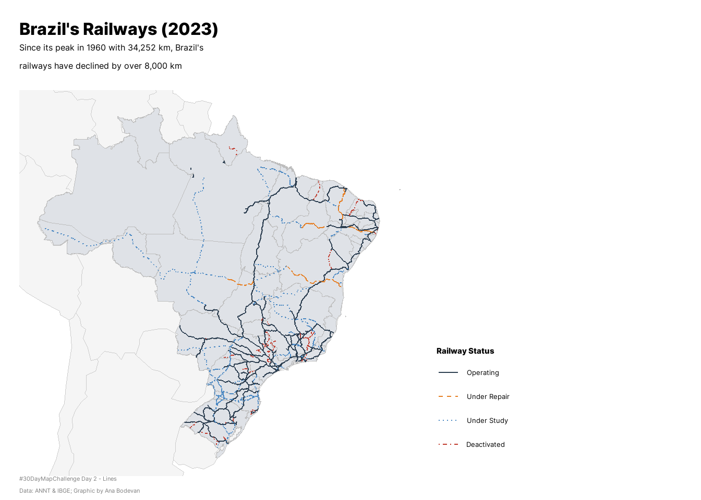

Code
library(pacman)
pacman :: p_load(tidyverse, sf, here, geobr, rnaturalearth, readxl, ragg, showtext, glue, patchwork, scales, cowplot)Brazil’s railway network has declined since its peak in the 20th century because of a number of reasons, from the crisis in coffee market during the Great Depression to a policy of highway expansion and lobby from car manufacturers in the 1950s. BBC has a pretty cool article about it (in portuguese). Overall, Brazilian railway network lost over 8.000 kilometers since the 20th century.
For Day 2 of the #30DayMapChallenge my idea was to map the decline in Brazil’s railway network.
library(pacman)
pacman :: p_load(tidyverse, sf, here, geobr, rnaturalearth, readxl, ragg, showtext, glue, patchwork, scales, cowplot)The data used is from the Banco de Informações de Transportes (BIT) from the Ministry of Transport. Data of the extension of railways over the years is from IBGE
knitr::opts_knit$set(root.dir = here::here())
# read railway shapefile
zip_path <- here("2025/02_lines/BaseFerro.zip")
extract_dir <- here("2025/02_lines/BaseFerro")
unzip(zip_path, exdir = extract_dir)
shp_file <- list.files(extract_dir, pattern = "\\.shp$", recursive = TRUE, full.names = TRUE)[1]
shp_rail <- sf::st_read(shp_file, quiet = TRUE)
# get brazil and south america shapefiles
shp_br <- read_state()
shp_latam <- ne_countries(type = "countries", continent = "south america", returnclass = "sf")
shp_latam <- shp_latam %>%
st_transform(crs = st_crs(shp_br))
# read kilometer extension
km <- readxl::read_xls("kms.xls")colnames(km) <- km[3, ]
km <- km[-(1:3), ]
km <- km[-(133:135), ]
rownames(km) <- NULL
colnames(km) <- c("YEAR", "KM")
km$YEAR <- gsub("\\.+", "", km$YEAR) # get the right col names and clean it up
km$YEAR <- as.integer(km$YEAR)
km$KM <- as.integer(km$KM)
km <- km |>
arrange(YEAR) |>
mutate(
delta_km = KM - lag(KM),
pct_change = 100 * delta_km / lag(KM)
)
km <- km |>
add_row(YEAR = 2025, KM = 29165) |>
arrange(YEAR) |>
mutate(
delta_km = KM - lag(KM),
pct_change = 100 * delta_km / lag(KM)
) # 2025 data from ANTTshp_rail <- shp_rail |>
mutate(
status = factor(
tip_situac, levels = c("Em Operação", "Em Obra", "Planejada", "Estudo", "Desativada", NA),
labels = c("Operating", "Under Repair", "Under Study", "Under Study", "Deactivated")
)
) |>
filter(!is.na(status))We have to exclude the state of Espiríto Santo of the bounding box because it has islands that may distort the map if included.
bbox <- shp_br |>
filter(abbrev_state != "ES") |>
st_bbox()font_add_google("Inter", "inter", bold.wt = 800, regular.wt = 400)
showtext_auto()
title <- "Brazil's Railways (2023)"
subtitle <- "Since its peak in 1960 with 34,252 km, Brazil's\nrailways have declined by over 8,000 km"
caption <- "#30DayMapChallenge Day 2 - Lines\nData: ANNT & IBGE; Graphic by Ana Bodevan"map <- ggplot() +
# South America context (light background)
geom_sf(data = shp_latam, fill = "#F5f5f5", color = "gray80", size = 0.15) +
# Brazil states
geom_sf(data = shp_br, color = "#BDBDBD", fill = "#dfe2e7ff", size = 0.25) +
# Railways by status
geom_sf(data = shp_rail, aes(color = status, linetype = status), size = 0.5) +
# Color scale for railways
scale_color_manual(
values = c(
"Operating" = "#2C3E50",
"Under Repair" = "#E67E22",
"Under Study" = "#4987c2ff",
"Deactivated" = "#C0392B"
),
name = "Railway Status"
) +
# Line type according to status
scale_linetype_manual(
values = c(
"Operating" = "solid",
"Under Repair" = "dashed",
"Under Study" = "dotted",
"Deactivated" = "dotdash"
),
name = "Railway Status"
) +
# Set bounding box to focus on Brazil
coord_sf(xlim = c(bbox["xmin"], bbox["xmax"]),
ylim = c(bbox["ymin"], bbox["ymax"])) +
# Labs
labs(tag = "",
title = title,
subtitle = subtitle,
caption = caption) +
# Theme
ggthemes::theme_map(base_family = "inter") %+replace%
theme(
plot.background = element_rect(fill = "white", color = NA),
panel.background = element_rect(fill = "white", color = NA),
plot.title = element_text(family = "inter", face = "bold", size = 24,
hjust = 0, margin = margin(b = 5)),
plot.subtitle = element_text(family = "inter", size = 12,
hjust = 0, margin = margin(b = 15)),
plot.caption = element_text(family = "inter", size = 8, hjust = 0, color = "gray50"),
legend.position = c(1.03, 0.35), # (x, y): 1.0 = right edge, >1 = outside
legend.justification = c("left", "top"),
legend.box.margin = margin(0, 0, 0, 0),
legend.background = element_rect(fill = "white", color = NA),
legend.title = element_text(face = "bold", size = 11),
legend.text = element_text(size = 10),
plot.margin = margin(10, 200, 5, 10)
)
map 
line <- ggplot(km, aes(x = YEAR, y = KM)) +
geom_line(color = "#2C3E50", linewidth = 0.8) +
# Highlight the peak
geom_vline(xintercept = 1960, linetype = "dashed", color = "#C0392B", alpha = 0.5) +
scale_y_continuous(
labels = scales::label_number(scale = 1/1000, suffix = "k"),
breaks = seq(0, 35000, 5000)
) +
scale_x_continuous(breaks = seq(1854, 2023, 30)) +
labs(
x = "Year",
y = "Railway Extension (km)",
title = NULL
) +
theme_minimal() +
theme(
plot.background = element_rect(fill = "white", color = NA),
panel.background = element_rect(fill = "white", color = NA),
panel.grid.minor = element_blank(),
panel.grid.major = element_line(color = "gray90", size = 0.3),
axis.title = element_text(family = "inter", size = 10, face = "bold"),
axis.text = element_text(family = "inter", size = 9, angle = 45),
axis.title.y = element_text(angle = 90, margin = margin(r = 10)),
axis.title.x = element_text(margin = margin(t = 10)),
plot.margin = margin(20, 20, 20, 20)
)
line
# Add a light border to your line chart for clarity
line_box <- line +
theme(
plot.background = element_rect(fill = "white", color = "gray85", linewidth = 0.3),
panel.grid.major = element_line(color = "gray90", linewidth = 0.25),
axis.text = element_text(size = 8, family = "inter"),
axis.title = element_text(size = 9, family = "inter", face = "bold")
)
final_plot <- ggdraw() +
draw_plot(map, x = 0, y = 0, width = 1, height = 1) +
draw_plot(
line_box,
x = 0.68,
y = 0.35,
width = 0.28,
height = 0.35,
hjust = 0,
vjust = 0
)
final_plot